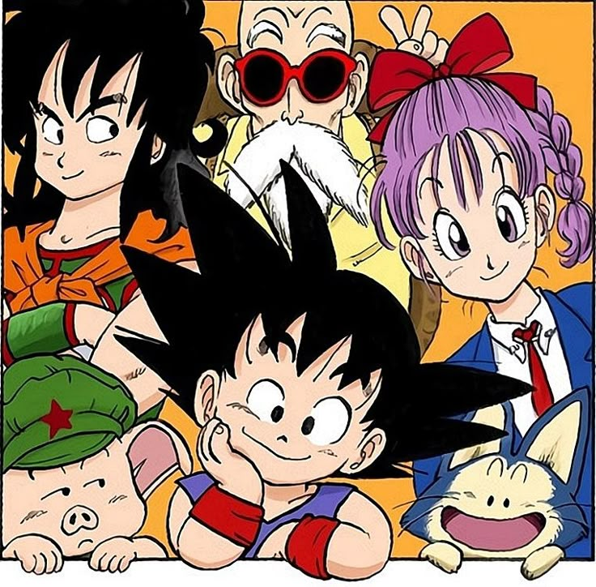

Mãe: Ginny / Pai: Bardock / Irmão: Raditz
Casado com: Chichi / 2 filhos: Gohan e Goten
Aparência: Goku se parece quase exatamente com seu pai , possuindo o mesmo penteado preto espetado, olhos escuros e características faciais. No entanto, ele tem olhos mais suaves, um comportamento gentil e uma pele mais clara de sua mãe
Son Goku, cujo nome de nascimento é Kakarotto, é o protagonista da renomada franquia "Dragon Ball", criada por Akira Toriyama, e lançada no ano de 1984. Um personagem que quebrou os padrões de sua época. Entre mangás com um etilo mais sangrento e com temas pesados, surgiu um carismático garotinho com rabo, vivendo entre as montanhas Paozu e sem nenhum tipo de contato humano. Goku conquistou o coração de todos aqueles que acompanharam a sua história, e até hoje é referência para praticamente, se não todos os mangakás mais famosos da atualidade.
Seu círculo social, inicialmente formado por Kuririn, Bulma, Mestre Kame, Yamcha e Pual, logo cresce, por consequência do carisma de Goku, formando assim os Guerreiros Z. Incluindo personagens como Vegeta, Picollo, Tenshinhan e Chaos.
